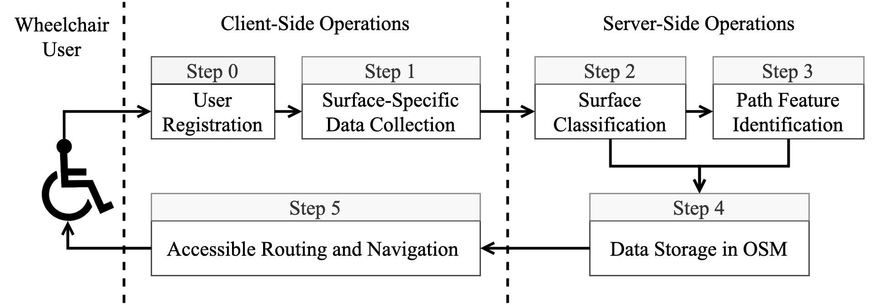

We introduce the MyPath accessible routing system for wheelchair users which works by crowd-sourced surface vibration data collected by wheelchair users in an unobtrusive manner through the MyPath app. Our MyPath app is an accessible app by itself and is thoroughly verified by a team of wheelchair users, blind and low vision (BLV) users, and rehabilitation and mobility experts. The app has both Android and iOS versions and is tested for many hours for correct functioning. The MyPath system consists of three interconnected modules - data collection, ML-based surface classification, and accessible route generation.

Functionally, the operations of the system are divided into a training phase and a live phase. In the training phase, experiments are conducted both indoors and outdoors for curbs, flat paths, and other common surface types. The surface type and slope data are used for classification model training. The live phase consists of an unobtrusive, participatory crowd-sensing technique to collect location-tagged path information from urban areas in order to identify accessible features and recommend personalized routes in the built environment. In the training phase, a registered wheelchair user can contribute to data collection (step 0 and step 1) using a smartphone (Android or iOS) embedded with motion sensors. Collected data is subject to a surface classification operation in the central server using machine learning (step 2). Once data is accumulated from the user’s surroundings, the graphical overlay map is constructed with important path features (step 3) which helps to generate accessible routes (step 4) based on user-initiated queries (step 5). The accessible route query and response for the user can take place during the testing phase with enough data to populate the server.